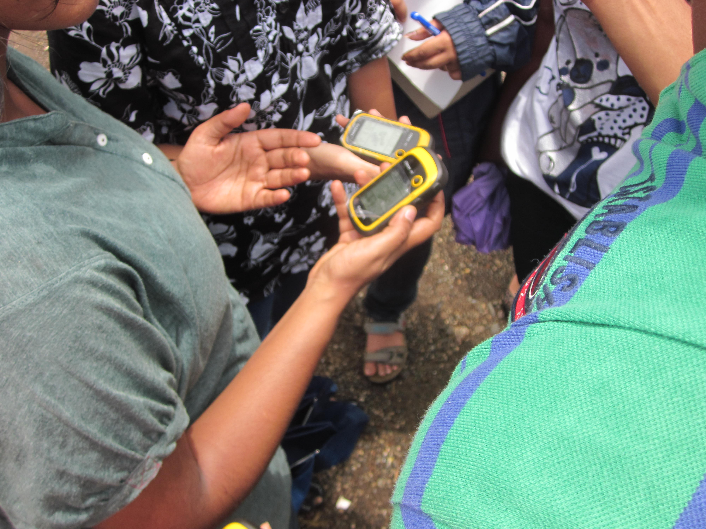
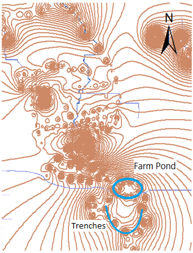
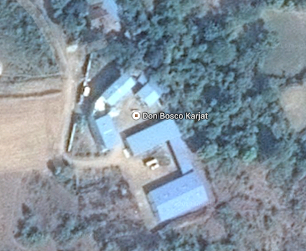
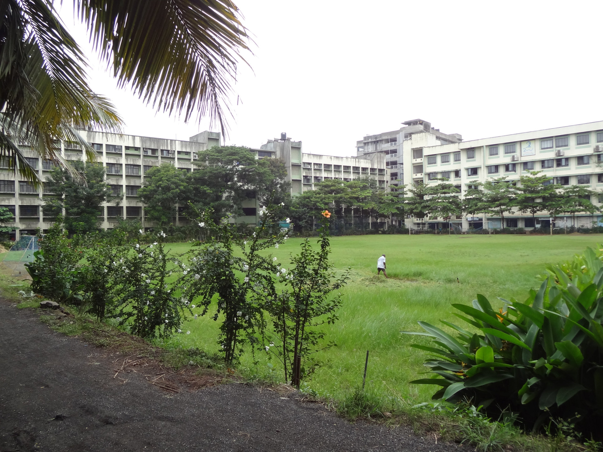
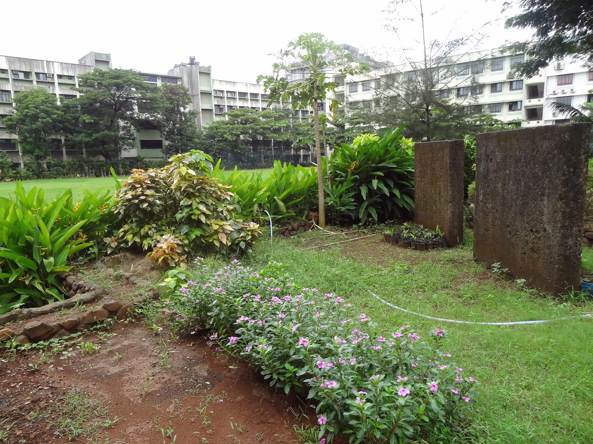
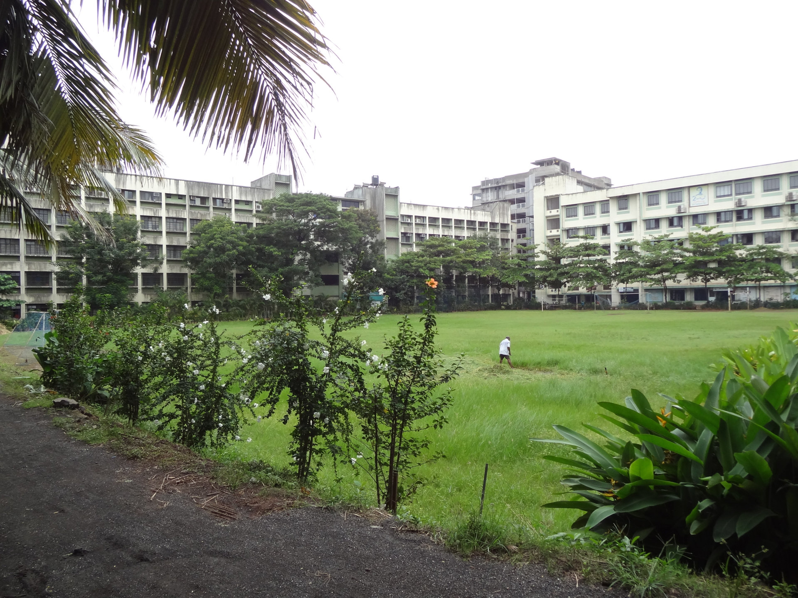
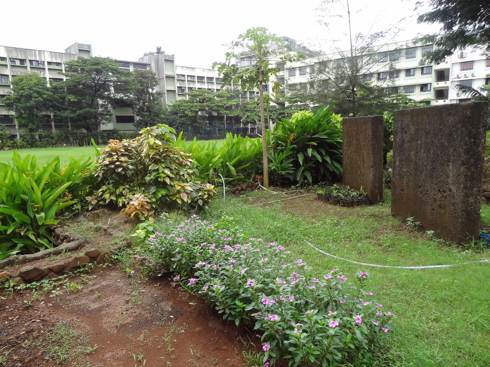
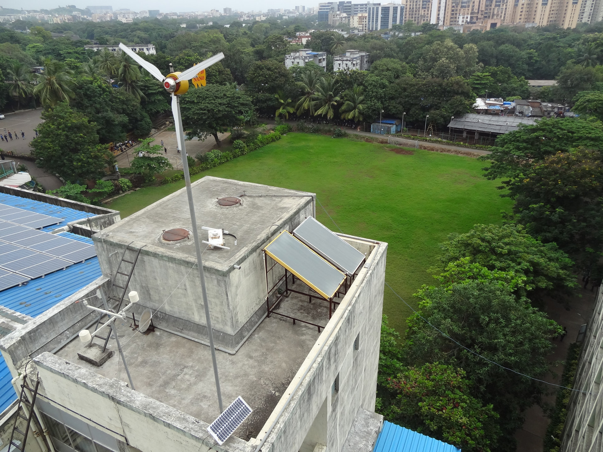
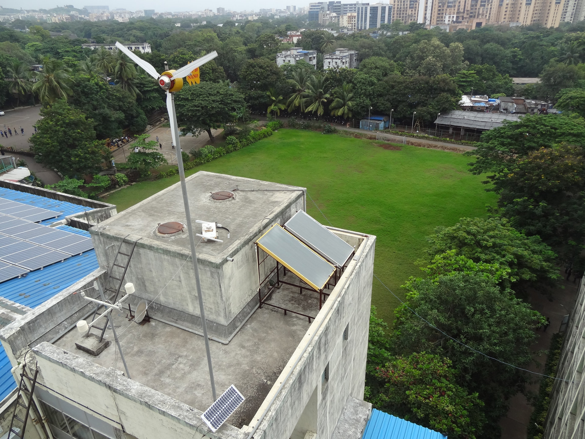

Analysis and Design of Micro Watershed
1. INTRODUCTION
The amount of rainfall in most parts of the Western Ghats is high but due to runoff and other factors there is scarcity of water during summer. These problems can be dealt with, by analyzing and designing of new water management techniques .The outcome of this study is to design a system so as to make the area self sufficient in water.
2. CURRENT SCENARIO
Don Bosco Yuva Sanstha is situated in Mote Vengaon in Karjat taluka in Raigad district.
Being at the foothills of the Western Ghats, Karjat receives runoff during the monsoon and also the soil in this region being primarily made of clay , is not able to hold water.
The local water sources include a dug well ,a bore well and a canal which run dry in summer. As a result ,tankers need to be brought in.
The villages and towns in this area face severe water shortage during the peak summer season and the ground water levels in the aquifers are fast depleting.
3. MEASURES TO IMPLEMENT
GPS devices were used to map the different points of the study area and the following contour map was
obtained using QGIS and ArcGIS software.

FARM POND AND TRENCHES
A farm pond is a large hole dug out in the earth, usually square or rectangular in shape, which harvests rainwater and stores it for future use.
A trench is a type of excavation or depression in the ground that is generally deeper than it is wide (as opposed to a wider gully or ditch), and narrow compared to its length.

ROOF TOP RAIN WATER HARVESTING
Rainwater harvesting is a technique of collection and storage of rainwater into natural reservoirs or tanks.

3. MEASURES TO IMPLEMENT
GPS devices were used to map the different points of the study area and the following contour map was
obtained using QGIS and ArcGIS software.


 



 
